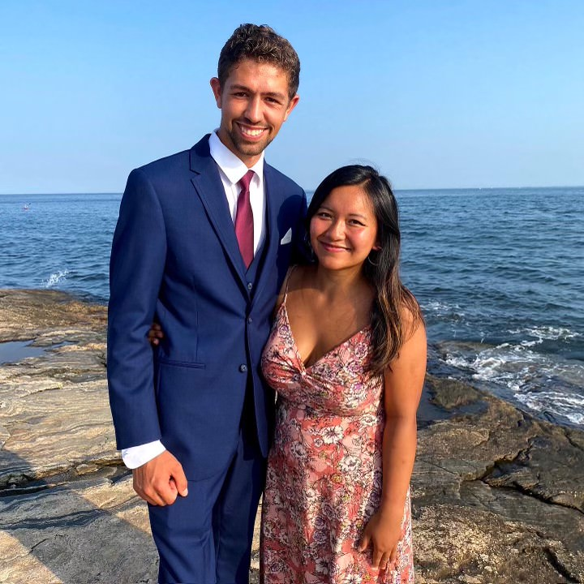

Chris Lally, from Cumberland, RI
Went to Cumberland High School
When and how we met: Chris (we call him Lally) was a senior and a brother in AKPsi when I met him rushing Fall 2019; he was the president of the chapter at the time and I remember wanting to get into AKPsi because of what he presented during that 1st information session. He explained why he was in AKPsi, how it benefited him, and gave advice on how we should approach rushing. His best friend from childhood, Ryan, became my big/mentor in AKPsi, and Lally took Sumer--another one of my good friends--as his little: so we all became a family! I am so lucky to have gotten to know Lally at such an early time of my Babson career, he has been one of my guiding lights and very close friends to this day.
Why Lally inspires me: Lally is the kind of no bullshit type of person. He puts his head to something and accomplishes it like that. He cares about people who align with his values and treats them like family. He cares about giving the people in his life good experiences that make for good memories. He cares about loyalty, hard-work, and a simple peaceful life. He taught me how to value the right things and led me to discover how to use my potential, socially, academically, personally, professionally, and more. I look up to his work ethic & I truly consider him and his fiancée, Ana, as my family.

Dec 2022 What is Lally up to: Lally and Ryan began the company Foam Family which is a seat cushion that helps people with their posture and the comfortability of sitting on chairs. They made $2,000 in profit after making over 300 cushions as highschoolers. Lally was also a runner and lacrosse player before coming to Babson College. He was a part of AKPsi and E-tower while running his business Flight Squad - a company that makes flying cheaper. He taught himself how to be a full stack developer on his own within the past 2 years. He now is working on a web3 venture with his fiancée called Fide.
Hobbies:
- Boating
- Raising his and Ana’s dog named Momo 🐕
- Beaches
- Traveling
- The great outdoors, adventuring
- Dancing
- Video making
- Website making
- Eating yummy food Ana coks
Top 3 memories:
-
Big/Little Costa Rica Trip
- Old Lyme - Jesus on Water
- Ana, K8, Sumer, Lally Nights
Lally's Dreams: Lally cares about curating a life of simplicity and purpose. Once he becomes a millionaire, which he will undoubtedly through whichever venture he takes on, he will then build his dream life for his family and friends. He cares deeply about his family and friends and they will always be a priority in his life. Lally will achieve a life full of happiness and adventure.
ADD PICTURES BELOW